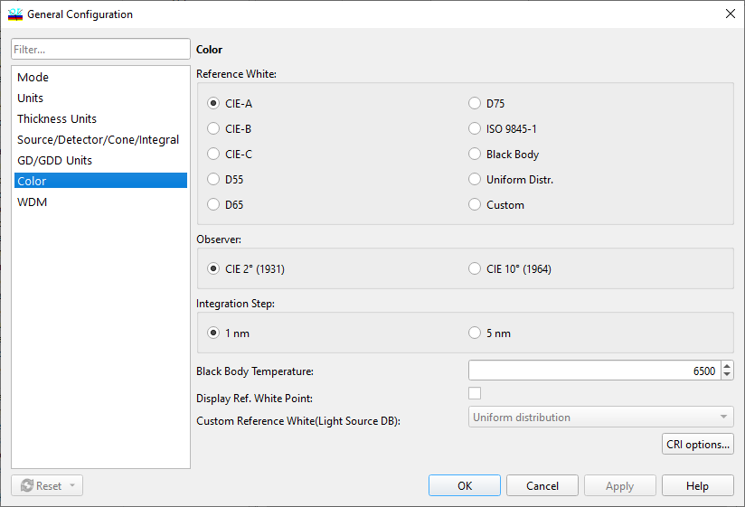

Color options
Color options
Navigation: OptiLayer Menu Commands > Configuration Menu >
Color options
` <source_detector_cone_integral.html>`__ ` <idh_menu_configuration.html>`__ ` <colorrenderingindexoptions.html>`__
Using the Color General Configuration option, you can customize computations of coating color characteristics.

Reference White group allows choosing a light source that is used as a reference white in some color systems. The user can select among several standard light sources that are often used as a reference white. It is also possible to use the spectrum of a black body or a custom light source.
If the Black Body option is selected in the Reference White group, then it is necessary to specify the Black Body Temperature.
If the Custom option is selected in the Reference White group, then it is necessary to specify a custom light source file that should be used as a reference white source. This file should already be present in the Light Source/Detector database in the current Problem Directory.
Observer determines the kind of observer used in color calculations.
Integration step specifies the grid that is used for color calculations. Usually, a 5 nm integration step is sufficient for most types of coatings. A 1 nm step may be required for coatings having rapid variations in spectral characteristics’ wavelength dependencies.
Display Ref. White Point allows displaying this point on color diagrams together with the performance of the current coating.
The CRI options… button opens a supplementary dialog setting a set of color samples for Color Rendering Index evaluation.